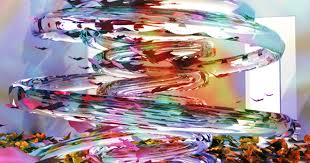
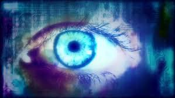

Prosomiosis
This piece is called Prosomiosis by Eva Papamargarati and was originally created for the 'Language of Dreams' exhibition, Hoxton Gallery, London. What I found very interesting was the use of color and shape to captivate people’s attention. Also interesting is the use of patterns, geometries, and objects found in a virtual ecosystem. It was cool to see a digital version of what the artist created to be an ecosystem. I also really enjoyed the audio that came along with it. I thought it really aligned well with the moving images and kept viewers engaged.
View Piece

Eye Code
The Eyecode piece is an interactive installation created by Golan Levin in 2007 and displayed in New York at bitforms gallery. I found this work to be extremely peculiar because it is literally constructed from its own history of being viewed! There is a hidden camera and its system records and replays video clips of people who view the display. This results in a, “typographic tapestry of recursive observation”. I personally have not seen anything like this so it was really cool to see a piece of artwork that is literally a reflection of its viewers.
View Piece